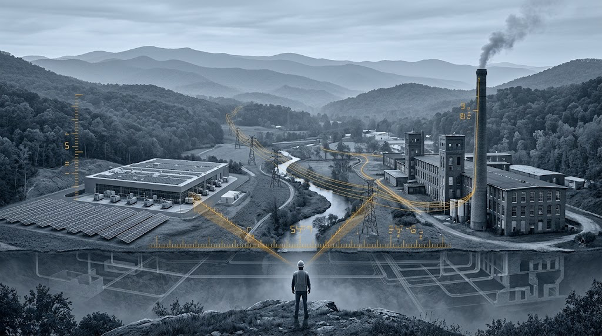

The Conversation Was Compounding
What happened when I sat down to think clearly about my county's industrial future — and the AI conversation pattern that produced an answer.

The county I live in is the fiber optic capital of America. It's also fifth in the nation for percentage of workforce in manufacturing — 30.4%, more than three times the national average. It hosts Apple, Google, Meta, and soon Microsoft data centers. And it's currently in a severe drought, with a growing local movement to stop more data centers from being built here.
All of that is true at the same time. And the conversation about what to do next isn't being helped by either the panic version ("data centers are killing us") or the dismissal version ("technology marches on, get out of the way"). The real questions are sharper than either side is asking. This is an attempt to ask better ones, and to show you a way of using AI that produced answers I couldn't have gotten any other way.
What I walked in with
A neighbor shared a post in a local Facebook group. The post linked to a university sustainability blog about the environmental cost of the AI boom. The comments were predictable on both sides.
I wasn't mad at any of it. I was trying to understand it. I live and teach in a county that already hosts Apple, Google, Meta, and soon Microsoft. We make the fiber optic cable the rest of the country uses to build the internet. We're fifth in the nation for percentage of workforce in manufacturing. We're also in a severe drought, and there's a growing local movement to stop more data centers from being built here.
All of those things are true at the same time, and I didn't have a clear opinion on what to do with that combination. I had pieces of opinions. Reactions. Patterns I'd noticed teaching AI to students at Lenoir-Rhyne. But not a position I could defend or even fully articulate.
I knew the standard environmental case against data centers because I'd read the same articles everyone else has. AI uses a lot of water. AI uses a lot of power. Don't generate images. Spell correctly to save the planet. Some of that is true, some of it is misleading, and almost none of it is useful for deciding what a county should actually do.
I also knew the standard defense. Progress is inevitable. The market will sort it out. These companies bring jobs and tax revenue. That version gets communities steamrolled, and the people making it usually deserve the skepticism they get.
And I had my own concerns, which weren't abstract. We're in a severe drought right now. My county is on water restrictions. The idea of multi-million-gallon industrial cooling systems operating in that context is something I take seriously, not something I'm trying to argue past. The power grid question worries me more than the water question, honestly, because it's harder to see and harder to fix. None of that went away when I started thinking about this. I wanted to understand it, not dismiss it.
Neither of the available frames was going to help me think about what's happening in my own county. Both treat data centers as the subject. In Catawba County, the data centers are something else, a piece of a larger picture that includes fiber manufacturing, a furniture and textile workforce that's been reinventing itself for forty years, a university where I teach AI to students who mostly grew up here, and a drought that's making everyone reasonably nervous.
The conventional arguments don't touch any of that. They're written for an abstract reader thinking about an abstract data center. I needed to think about this place, these decisions, the actual trade-offs.
That's where most thinking about big topics breaks down. The available arguments are pitched at the wrong altitude. You can read every think piece on AI infrastructure and still not know what to do about the proposal in your county. The gap between national discourse and local decision-making is enormous, and most of the time we just live with it.
What I wanted was a way to close that gap. Not a hot take. A position, something specific to my region that I could defend and act on, with my actual concerns intact.
What I did
So I sat down with Claude, opened a fresh conversation, and started typing.
The first thing I learned is that the way most people use AI for this kind of thinking is wrong. I'd done it the wrong way myself plenty of times. Type the question. Take the answer. Move on. The answer is always plausible, often accurate, and almost never useful, because the question was too broad and the model defaulted to a balanced overview that didn't push my thinking anywhere.
What worked better was treating the conversation as a process rather than a query.
I started with what I actually knew — that Apple, Google, Meta, and Microsoft had data centers in the region, that we made fiber optic cable here, that I was worried about water and power, that I taught AI to students who'd grown up in these counties. I didn't ask "are data centers good or bad." I asked it to help me think about the specific situation I was in, with the specific concerns I had, in the specific region I was thinking about.
The first surprise came within ten minutes. I'd assumed Apple's Maiden facility drew power from the grid like any other industrial customer. It doesn't, or at least not in the way I'd pictured. Apple built three 100-acre solar farms in Catawba County — one in Maiden, one in Conover, one in Claremont — totaling 40 megawatts of solar generation, plus 10 megawatts of biogas fuel cells running on methane captured from nearby landfills. The Maiden facility generates more renewable energy than it consumes at peak production. At times, it's a net power producer for Duke Energy.
That wasn't what I expected. I'd read the same articles everyone else has. The mental picture I'd been carrying was the standard one: data center plugs into grid, drains grid, contributes to fossil fuel demand. The actual situation in my county was the opposite — a hyperscaler quietly running one of the largest private renewable energy installations in the country, for over a decade, with most local residents (me included) unaware of the scale.
The second surprise complicated another concern. The image that comes to mind when people picture data center development is farmland being paved over — agricultural land lost, ecosystems disrupted, working farms converted to industrial use. That's the picture I had too. But it turns out Apple was first interested in renovating an abandoned textile mill for the Maiden site. The mill turned out to be too small, but the broader pattern held: Catawba County started actively recruiting data centers in 2005 specifically because the textile and furniture closures had left industrial-grade power and water infrastructure standing empty. The data centers got sited where the mills used to be. The land had already been industrial for a century.
Neither of these surprises dissolved my concerns about water or power. The drought is still real. Microsoft's incoming four facilities will add load that no on-site solar can fully cover. The grid question remains the harder one. But both surprises complicated my mental model in a useful way. The reality on the ground was more specific than the national conversation suggested, and the specifics mattered.
That's when I realized what was actually happening in the conversation. I wasn't extracting information. I was building a picture of my own region that was accurate enough to think clearly about. Every fact I added let the next question be sharper. Every sharper question pulled out a more specific fact. The conversation was compounding.
How the method actually works
Once I noticed the conversation was compounding, I started using it differently.
Instead of asking single questions, I started building. Every response surfaced something I could push on — a number that needed a comparison, a claim that needed a source, a generality that needed a specific. I'd ask the next question, the response would land sharper, and the picture would get more accurate.
When I caught the model hedging — giving me the on-the-one-hand-on-the-other-hand version of an answer — I pushed back. Don't give me both sides. Tell me which one the evidence actually supports. That single move changed the quality of what came back. The model isn't trying to deceive you. It's trying to be safe. If you give it permission to take a position, it will, and the position is usually defensible.
When I disagreed with what came back, I said so. Not as a complaint but as more input. I don't buy that — here's why. The model would either revise its take with the new context, or push back and explain why it still held the original view. Both were useful. The pushback was sometimes the most useful thing in the whole conversation, because it surfaced an assumption I hadn't examined.
I also kept switching modes deliberately. Some stretches were research — what do we actually know about this. Some were drafting — help me write the version of this argument I could post in a Facebook thread without getting eaten alive. Some were adversarial — find the holes in what I just said. The same conversation could do all three, but I had to know which mode I was in and tell the model which mode I needed.
The biggest shift came when I stopped treating the model as the source of the analysis and started treating it as the structure for the analysis. I knew things about Catawba County that the model didn't — that we made pool noodles and furniture and beer, that my students mostly came from the foothills, that the people in the Facebook thread were my actual neighbors. The model knew things I didn't — the closed-loop cooling stats, the Brookings cluster research, the Apple solar specifics, the NC brownfields program. Neither of us could have produced what we ended up with alone. The conversation was the thing that combined them.
That's the move most people miss. They use AI like a search engine because they're treating their own knowledge as the question and the model's knowledge as the answer. But for anything that actually matters — a decision about your community, your career, your family — the question and the answer both depend on context the model can't see and you haven't fully articulated. The conversation is where those two bodies of knowledge meet, and the quality of what comes out depends on whether you keep feeding both sides into it.
What I came out with
When I stepped back and looked at what the conversation had produced, the picture had reorganized itself.
The data center question wasn't really a data center question. It was a question about whether Catawba County's strategic position — the thing that's been quietly assembled here over the last twenty years — is something to defend, extend, or surrender. Framed that way, the answer became obvious.
The cluster is a competitive advantage compounding the other strategic benefits of our region.
We make the fiber optic cable that the rest of the country uses to build the internet. We have one of the densest manufacturing workforces in the United States, fifth in the nation by percentage. We have hyperscale data centers from four of the largest companies in the world. We have a university where I teach AI, two community college systems with serious workforce programs, and industrial real estate left over from a century of textiles and furniture that's purpose-built for exactly what's coming next. Each of those pieces is a real asset on its own. Together, they're something rarer — a complete stack, in one place, that almost no other region in America has.
The data centers aren't the point. They're the anchor — the visible piece that makes the rest of the stack make sense to outsiders. When Corning expands here instead of in Arizona, the data centers are part of why. When a German radiopharmaceutical company chooses Catawba for its first U.S. facility, the cluster is part of why. When my students don't have to leave the foothills to work in AI-adjacent industries, the cluster is part of why.
That changes what the actual question is. It's not should we have data centers. It's given that we already have a stack other regions are spending billions trying to build from scratch, how do we make sure we don't squander it? That's a different conversation, and it has different answers.
The legitimate concerns don't go away. The grid is finite, and every megawatt allocated to a hyperscaler is one not allocated to a future manufacturer. The water budget of the Catawba-Wateree basin is contested. Microsoft's four facilities will add load that current on-site renewable generation can't fully cover. The political durability of hosting data centers tends to erode over fifteen to twenty years if local leadership doesn't actively manage the relationship. None of that is solved by acknowledging the cluster advantage.
But all of it becomes a management problem rather than a whether problem, and management problems have policy answers — community benefit agreements, disclosure requirements, grid additionality, infrastructure investment, workforce reinvestment commitments from the companies that benefit from being here.
That's where the conversation should actually be. Most of it isn't.
If you got this far, you probably want the prompt. Here it is — but the prompt is the smaller part of what makes this work. The bigger part is the disposition you bring to the conversation.
Run this on your own region. Replace the bracketed text with your actual county or metro area. Use a model with web search enabled — without it, the model is working from memory and the analysis will be thin.
I live in [your county, your state]. I want to think clearly about my region's industrial future. Map the full stack of what's actually here using public data and recent reporting. For each layer, give me named companies, employment figures, and notable investments from the last five years where available: 1. Legacy industrial infrastructure — power capacity, water systems, rail, highway access, existing industrial real estate, brownfields. 2. Current manufacturing base — largest employers, sectors, workforce concentration vs. the national average. 3. Digital infrastructure — data centers, fiber, telecom. 4. Higher education and workforce pipelines — universities, community colleges, apprenticeship programs. 5. Recent reshoring, expansion, or major investment announcements. Then assess: given this stack, what industries are most likely to land here in the next decade, what's missing or weak that would prevent that, and what would the most legitimate local concerns be?
That's the first part. Read what comes back carefully. Most of what's in the response, you probably didn't know about your own region. That's the point — you're building a picture accurate enough to think with, which is the prerequisite for everything that comes next.
Then comes the part most people skip. Write out, in two or three sentences, what you actually believe about your region's industrial direction. Don't soften it. Don't perform balance. Write the position you'd defend at a county commission meeting. Then send this:
Here's my position: [paste your view]. Based on the regional stack you just mapped, identify three ways my position is incomplete, inconsistent with the facts on the ground, or driven by an assumption I haven't examined. Be direct. Don't perform balance. If my position is well-supported, say that and explain why. If it's not, tell me where it breaks down. I'm asking you to push back, not validate.
Sit with the response before you do anything with it. Don't argue back yet. Don't dismiss what doesn't fit. The exercise only works if you let the model do what you asked.
That's the whole prompt. Two parts. The first part gets you specific. The second part gets you honest. Most of the work happens in the second one, and most readers won't run it. That's their loss.
The method this issue teaches isn't really about regions or data centers or any specific topic. It's about how to think with AI on questions that actually matter to you — your community, your career, your family, the decisions you'll make this year that you don't yet know how to evaluate. Run this pattern on whatever you're trying to think about. Build context. Push for specifics. Switch modes deliberately. Disagree as input. Let it push back. Combine what you know with what the model knows, and trust neither one of you to produce the answer alone.
That's the whole method. The data centers were just where I happened to practice it.